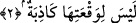
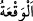
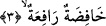

2. Ki onun oluşunu yalanlayacak hiçbir kimse yoktur;
Rağıb demiştir ki: Harbten kinaye olarak __WORD__ (el-vak’atü) kelimesi kullanılır. Yine
her şiddetli düşüş de bu kelime ile ifâde edilir.
Ebu’l-Leys demiştir ki: Kıyâmete “el-Vâkıa” ismi, sesinden dolayı verilmiştir. Âyet-i
kerîmenin mânâsı şudur: Kıyâmet koptuğu sırada Allah Teâlâ’yı yalanlayacak ve ona
ortak koşarak çocuğu ve karısı bulunduğunu iddiâ ederek iftirâ edebilecek, ölüleri
diriltemeyeceğini söyleyebilecek her hangi bir kimse bulunmayacaktır. Çünkü o zaman
her kişi, îman etmiş, doğru söyleyen ve tasdik eden durumda olacaktır. Halbuki, bugün
insanların çoğu yalancı ve yalanlayıcıdır. Bu takdirde “li vak’atihâ”daki “lâm” harfi
vakit için, “kâzibe” kelimesi ism-i fâildir. Yahut mânâ şöyle olur: Kıyâmetin kopacağı
hakkında her hangi bir yalanlama yoktur. Aksine, kıyâmet konusunda gelen bütün
haberler gerçektir, doğrudur herhangi bir şüphe yoktur. Bu takdirde “lâm” sebep için,
“kâzibe” kelimesi “âkibet” gibi masdardır.
3. O, alçaltıcı, yükselticidir.
Yâni kıyâmet nice toplumları alçaltıcı, diğerlerini de yükselticidir. Âyet-i kerîme,
kıyâmetin büyüklüğünü kinâye yoluyla anlatmaktadır. Zira, büyük olaylarda ve
çalkantılarda bazı insanlar bir takım mevkilere yükselirken, diğerleri de alçalırlar.
Metinde, alçaltmanın yükseltme haberinden önce getirilmesi kıyâmetin korkunçluğunun
şiddetini anlatmak içindir.
Bazı müfessirlere göre, kıyâmet Allah’ın düşmanlarını cehenneme atıp düşürür,
dostlarını da cennete yükseltir. Yahut, bir takım toplumları adâletiyle Allah alçaltır, bir
takımlarını da fazl u keremiyle yükseltir. Ya da, kimi toplumları bir takım sözler ve
davalar sebebiyle alçaltır, birtakım toplumları da hakikatler sebebiyle yükseltir.
İbn Abbas (r.anhümâ)’dan rivayet edildiğine göre, dünyada yüksek mevkilerde
bulunan bazı toplumları kıyâmet alçaltır, bir takım toplumları da dünyada düşük
durumda iken yükseltir.
O gün köle/fakîr Bilâl’i getirip, taç hülle ve binitiyle sevinç gösterisi içinde Firdevs-i
a‘laya götürürler. Efendisi Ümmeye b. Halef’i ise zincirlere vurulmuş derbeder bir
halde esfel-i sâfilîne atarlar. Teylesân giymiş (güzel elbiseli) o münâfığı ateşe sokar,
basit giysileriyle ihlâslı Bilal’i cennete gönderirler. Bidat ehli münâcât eden bu yaşlıyı
kahır ateşiyle yakar, itikât sâhibi harâbat ehli bu gence ikbal ve devlet verirler.
Merkebe binmekten âciz pîr-i münâcât pek çoktur